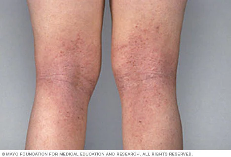

Atopic dermatitis (eczema) is a condition that makes your skin red and itchy.
It's common in children but can occur at any age. Atopic dermatitis is long lasting (chronic) and tends to flare periodically. No cure has been found for atopic dermatitis.